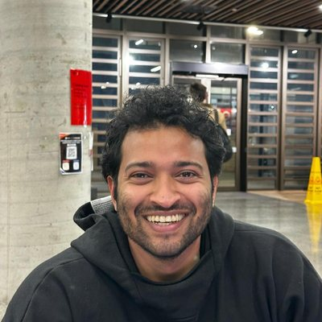

Upload a CT
An abdominal CT series goes in. No report or manual markup is needed.
About us
Soft Contour Lab is an AI startup in Sydney. We build software that takes an abdominal CT scan and highlights the tumour: its most likely edge, plus an honest band where that edge is uncertain. We're starting with pancreatic cancer, where getting the edge right is hardest.
What we do
Radiologists spend a lot of their reading time working out exactly where a tumour ends. That boundary matters for staging, for deciding whether surgery is possible, and for tracking whether treatment is working.
Most AI tools answer a simpler question: is there a tumour, and roughly where? They approximate its shape and often trim anything outside the organ. Soft Contour answers the harder one. It traces the tumour's real boundary on CT, and it shows where it is unsure, so the radiologist knows exactly where to look.
The model needs only the CT. There's nothing extra for the radiologist to supply.
How it works
An abdominal CT series goes in. No report or manual markup is needed.
Our model follows the tumour's true edge, including where it extends past the organ.
The radiologist sees the most likely boundary and a graded uncertainty band, and stays in charge of the read.
Why now

Team
A team of engineers and researchers in Sydney, covering model training, uncertainty modelling, clinical language, data engineering and evaluation.
Meet the teamGet in touch
We're looking for pilot partners and early conversations. One email reaches the founder.